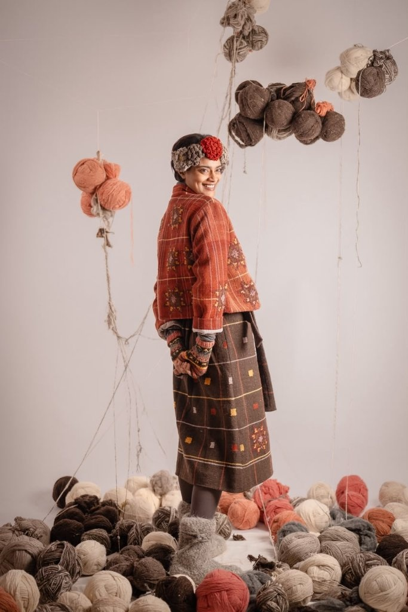
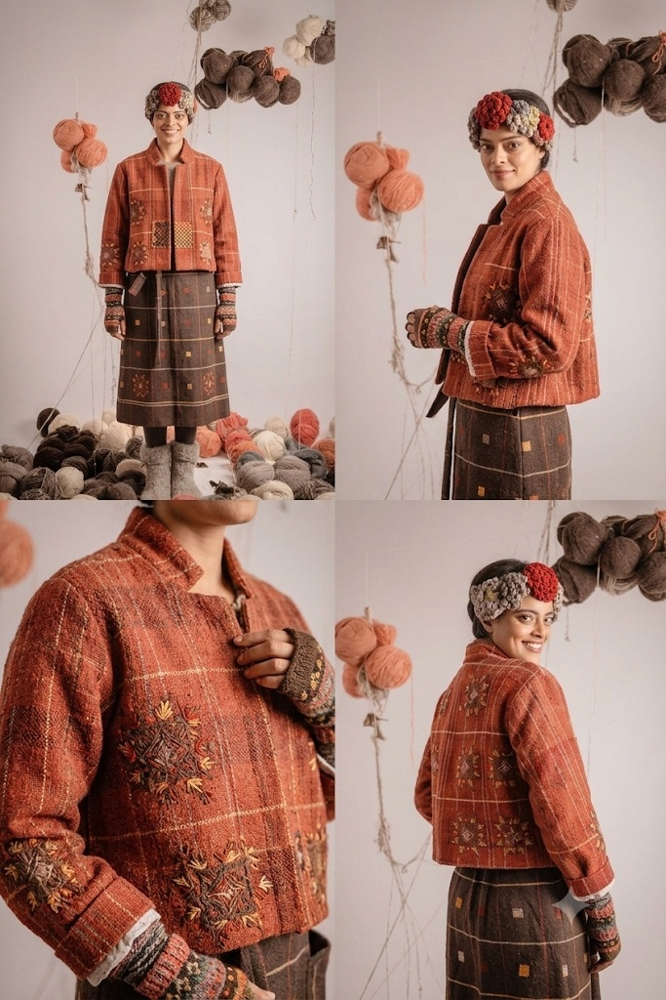

03
Finished product
The completed Himachali Handwoven Jacket — warm, structured, and infused with generations of mountain craft.
Scroll Photo · 4:5
Photo · 4:5
01Final Reveal

Photo · 4:502Silhouette & Drape

Photo · 4:503Craft Details